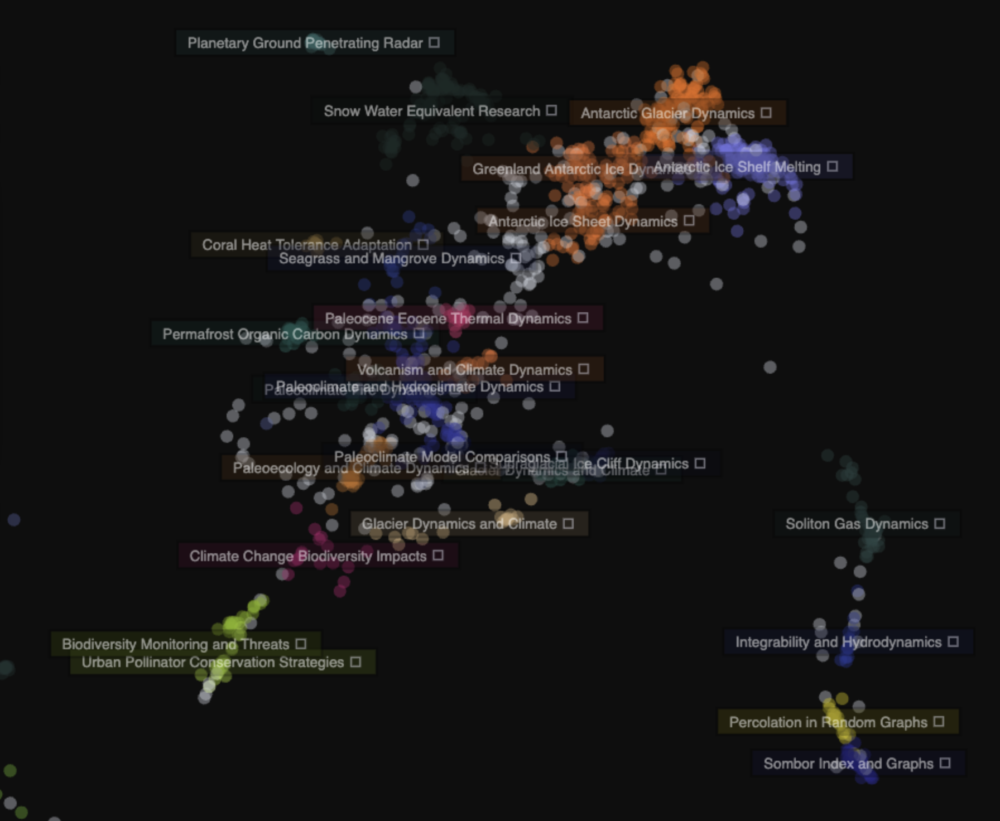

Institutional outputs and metadata
Build a corpus from research outputs, associated metadata and accessible source material.
Macroscope analyses institutional research outputs to reveal the structure, strengths and hidden patterns of knowledge production.
A university is not just a list of departments. It is a landscape of ideas, methods, people and signals.

Existing analytics can count, rank and benchmark research. Macroscope is built to understand institutional research as a landscape of themes, clusters, strengths and signals.
Macroscope retrieves, structures and analyses research outputs. Macroscope Studio turns the resulting maps, evidence and synthesis into a detailed institutional intelligence report.
Build a corpus from research outputs, associated metadata and accessible source material.
Create an epistemic landscape from the relationships inside the institution's actual work.
Retrieve open texts and use them to support richer cluster interpretation and synthesis.
Analyse funding, leadership, impact, thematic signals and evaluation calibrated against human judgement.
Transform maps, data and analysis into designed institutional intelligence reports.
Macroscope does not begin with a fixed disciplinary schema. It builds the map from the actual research outputs of the institution, allowing interdisciplinary, emerging and overlooked areas of strength to become visible.
The report is designed for senior leaders, research offices and strategic partners who need a clear view of institutional research identity.
Macroscope is built for interpretation as well as measurement. It gives structure to institutional complexity without flattening it into league-table logic.
Focused on understanding the internal shape of a university's research, including clusters that do not match standard categories.
Combines research signals with machine-assisted reading and human-calibrated judgement.
Works below the level of schools and departments, where emerging strengths often become visible first.
Semantic Space is currently working with selected institutions and partners to produce institutional research landscape reports. The consultancy offer combines data retrieval, semantic mapping, Macroscope lenses and designed reporting.
For universities, research offices, funders and strategic partners.